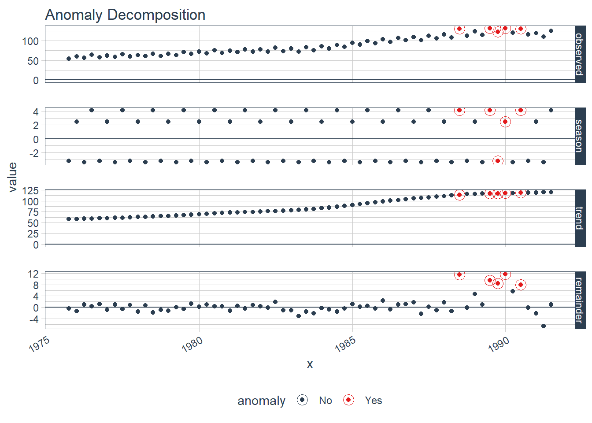
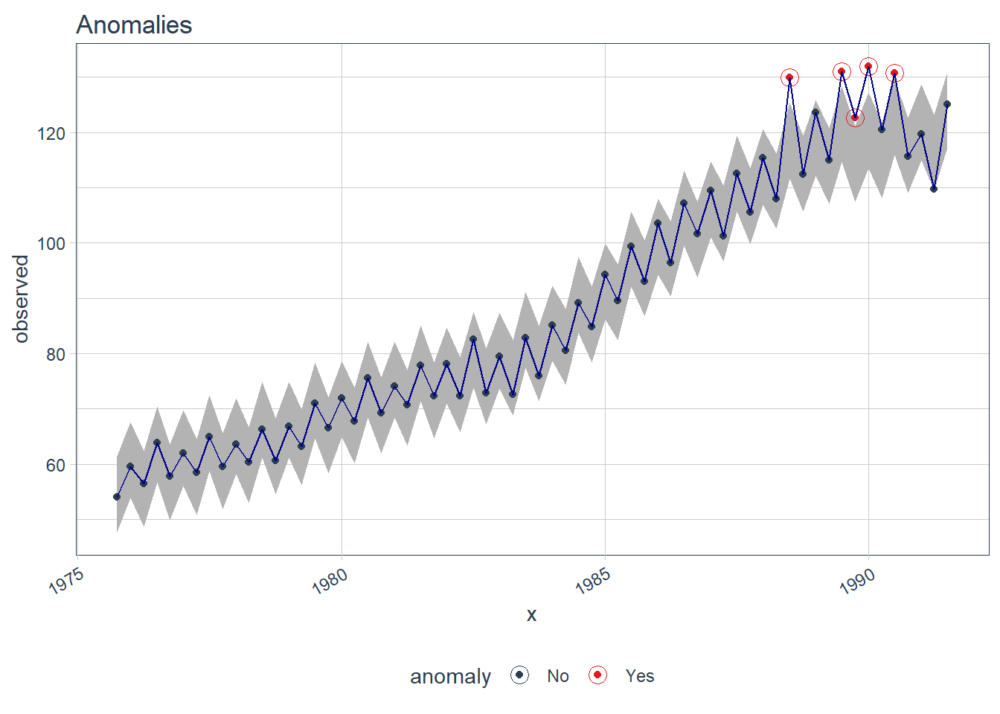
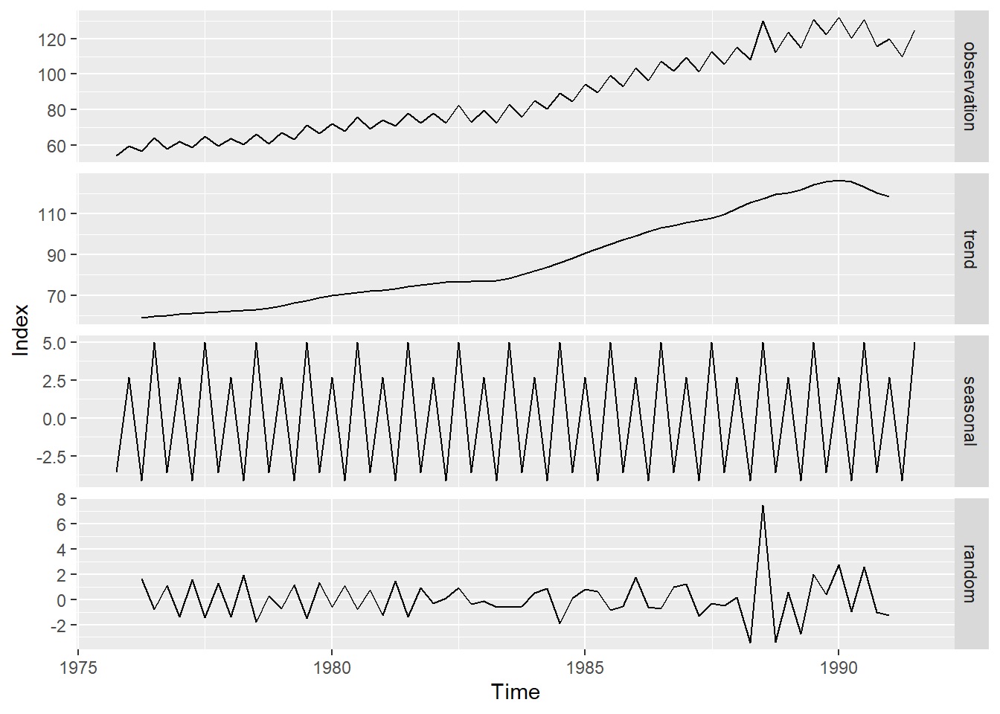
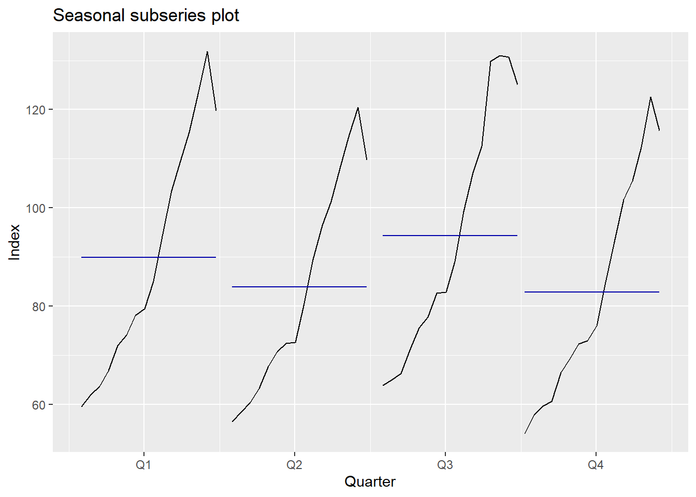

2 Exploratory Data Analysis
2.1 Observations and Trend
2.2 Anomalize
x<-as.yearqtr(data_csv$Year)
x<-as.Date(x)
y<-data_csv$Production
tbl<-tibble(x,y)
p1 <- tbl %>%
time_decompose(y) %>%
anomalize(remainder, alpha = 0.05, max_anoms = 0.2) %>%
plot_anomaly_decomposition() +
ggtitle("Anomaly Decomposition")## Converting from tbl_df to tbl_time.
## Auto-index message: index = x## frequency = 4 quarters## trend = 17 quartersp2 <- tbl %>%
time_decompose(y) %>%
anomalize(remainder, alpha = 0.05, max_anoms = 0.2) %>%
time_recompose() %>%
plot_anomalies(time_recomposed = TRUE) +
geom_line(color='darkblue')+
ggtitle("Anomalies")## Converting from tbl_df to tbl_time.
## Auto-index message: index = x## frequency = 4 quarters## trend = 17 quartersp3<-tbl %>%
time_decompose(y) %>%
anomalize(remainder,alpha = 0.05, max_anoms = 0.2) %>%
time_recompose() %>%
filter(anomaly == 'Yes')## Converting from tbl_df to tbl_time.
## Auto-index message: index = x## frequency = 4 quarters## trend = 17 quarters

p4<-tibble(x=p3$x,
observerd=p3$observed,
seson=p3$season,
trend=p3$trend,
remainder=p3$remainder,
anomaly=p3$anomaly)
p4%>%pander()| x | observerd | seson | trend | remainder | anomaly |
|---|---|---|---|---|---|
| 1988-07-01 | 129.9 | 4.127 | 114.2 | 11.55 | Yes |
| 1989-07-01 | 131 | 4.127 | 117.3 | 9.524 | Yes |
| 1989-10-01 | 122.6 | -3.214 | 117.5 | 8.331 | Yes |
| 1990-01-01 | 131.9 | 2.459 | 117.9 | 11.58 | Yes |
| 1990-07-01 | 130.7 | 4.127 | 118.6 | 7.956 | Yes |
2.3 Seasonality
The WO-test gives out a TRUE if the series is seasonal and FALSE otherwise.
## Test used: WO
##
## Test statistic: 1
## P-value: 0 0.01518954 5.843575e-05
##
## The WO - test identifies seasonality# This function converts time series-class data into a data frame of decomposed time series.
df <- dts2(data_ts, type ="additive")## Loading required package: lubridate##
## Attaching package: 'lubridate'## The following object is masked from 'package:base':
##
## date# plots decomposed time series into one figure
p<-ggdecompose(df)+
theme_gray()+
xlab("Time")+
ylab("Index")
p## Warning: Removed 2 row(s) containing missing values (geom_path).

2.4 Box Plot
p<-ggplot(data_tibble,aes(x=factor(quarter,levels = c('Q1','Q2','Q3','Q4'),ordered=TRUE),y=value))+
geom_boxplot()+
theme_gray()+
labs(title = 'BoxPlot', x='Season', y='Index')
fig<-ggplotly(p)
fig# To obtain stats values and plot non-ggplot box-plot
z<-boxplot(data_ts~cycle(data_ts),xlab='Quarter',col='beige',
ylab='Industrial Production Index', ylim=c(50,140), axes=FALSE)headsv<-c('Q1','Q2','Q3','Q4')
headsh<-c('Minimum','25th Percentile','Median','75th Percentile','Maximum')
zdf<-data.frame(z$stats)
rownames(zdf)<-headsh
colnames(zdf)<-headsv
zdf%>%
kable%>%
kable_styling(bootstrap_options = c("responsive"), full_width = F, position = "left")%>%
column_spec(1:1, bold = T) | Q1 | Q2 | Q3 | Q4 | |
|---|---|---|---|---|
| Minimum | 59.50 | 56.50 | 63.90 | 54.10 |
| 25th Percentile | 69.40 | 65.50 | 73.30 | 63.55 |
| Median | 82.30 | 76.55 | 85.95 | 74.45 |
| 75th Percentile | 112.45 | 104.65 | 118.85 | 103.60 |
| Maximum | 131.90 | 120.50 | 131.00 | 122.60 |